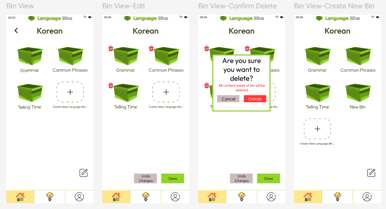
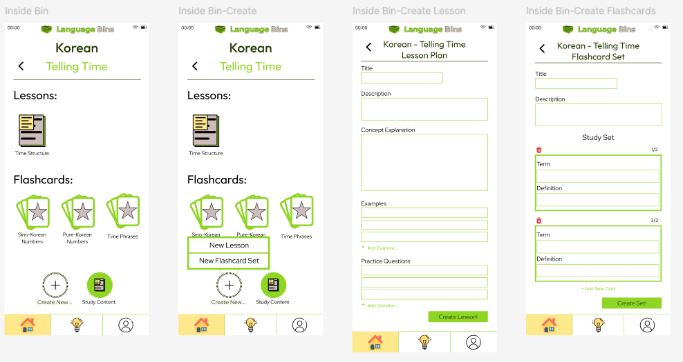
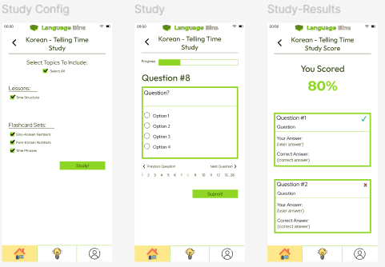
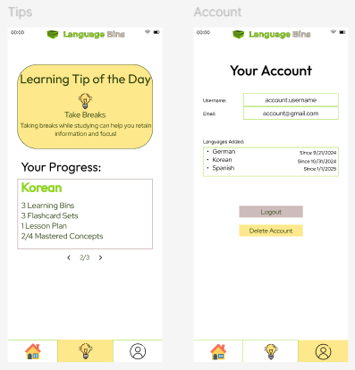

This app was designed to assist young adults in their language learning journey by implementing organizational learning techniques and proving a mindful studying environment.
‘Language Bins’ is an app catered towards young adults learning new languages. This app will help them organize their studies and easily review what they already know, helping them to retain knowledge and encourage them to continue studying.
Learning a new language can be overwhelming with the amount of information that people learn. As a result, young adults learning new languages often give up their language learning journey.
The Language Bin learning app will help young adults organize what they’ve learned into categories, making the language(s) less overwhelming. It will also help them study what they’ve learned, encouraging them to continue their language learning journey.
My first method of research was to conduct a survey, asking young adults to sort features of the app into specific categories. Features include: Learning Tips, Flashcard Creation, Flashcard Review, Lesson Summary, Lesson Review, and Studying Achievements. These features were asked to be separated into categories: Initial Learning, Studying, and Additional Help/Encouragement. The purpose of this survey was to logically group the features of the app in a way that makes sense to the users, as well as get feedback on what they feel is missing or could be added from the draft of the app.
To enhance my problem statement, I also conducted research on language learning in young adults and color theory for language learning to identify what colors work best for retaining knowledge.
For the survey results, users grouped Learning Tips and Studying Achievements with Additional Help, Flashcard creation, Flashcard Review, and Lesson Review with studying, and Lesson Summary with Initial Learning. An idea to show progress charts in each category was introduced as well; which was placed into the category of Additional Help and Encouragement.
Young adults have the advantage of having a better understanding of concepts, patterns, and making connections when learning a new language, helping them to learn the concepts faster. (ICLS,2024)
Color is helpful to use when learning anything new because it boosts our attention level and arousal. Warm colors like yellow, red, and orange have proven to be more effective in catching users’ attention than cool colors. Arousal refers to physical and internal alertness. Each color used has a different amount of arousal based on the emotion a color is attached to. (Dzulkifli & Mustafar)
Color psychology further explains colors commonly used in education and what emotions they invoke in learners that helps them retain information. Red and yellow are colors that catch learners attention most, highlighting that the information is important. Green helps with relaxation and concentration. It is important to note that red and green are affected by color-blindness. (Taylor, 2023)
Young adults are often overwhelmed by learning a new language because of the amount of information to retain. There are misconceptions that language learning is harder for young adults than for children, discouraging them from continuing their studies. By creating an app that uses categorization to aid in language learning, more young adults will feel encouraged to continue learning languages and reach native level understanding.
When the user logs in, they are taken to the home page that displays “Language Closets” of each language they are studying. They have the option to add another language, in which they input the language name and the color for the closet door.
These next four pages show the functionality of the language bins. After the user selects a language closet, they are taken to the bin view to see their collections. The grammar bin is there by default and the common phrases & telling time bins are user created. The edit button on the bottom right allows users to remove bins from their language closet. Users are also able to add new bins.
The next four wireframes show content inside of the “Telling Time” language bin. Users are able to create lessons and flashcard sets inside of their bins, helping them remain organized. When selecting “create new”, the user is prompted to create a new lesson plan or flashcard set. They are then directed to the appropriate page and asked to fill in the prompts to create their learning content. Lesson plans have practice questions towards the end that are used in the study section of the app.
When the user selects “study” from the bins page, they are directed to configuration, allowing them to select what concepts to study based on their lessons and flashcard sets.
Once they are ready, they are directed to the study page. This page includes a progress bar, numbered questions, and a numberline at the bottom. After completing the quiz, users are taken to the results page where they can view the questions they answered correctly and incorrectly, as well as their score.
The lightbulb icon directs the user to the useful tips and encouragement page. Here, there is a daily tip to help the user with their language studies. There is also a progress table for each language the user is learning, telling them the number of bins they have, flashcard sets, lesson plans, and how many concepts they have mastered. A bin is mastered when the users gets 100% on the quiz 3 times.
The account tab shows the users information such as username and email. It also shows the languages they are learning and when they started the language. Lastly, the page gives them the option to logout or delete their account.
This project enhanced my mobile designing and user research skills. I realized the importance in conducting user tests as well, finding myself altering my initial ideation of the design based on the results. Researching also helped me to create a color scheme that would be beneficial towards all users, keeping in mind colors that help retain information but are also mindful towards those with color-blindness. Of all of my past projects, I have made the most wireframes for this one, challenging me to remain consistent and manage my time efficiently.